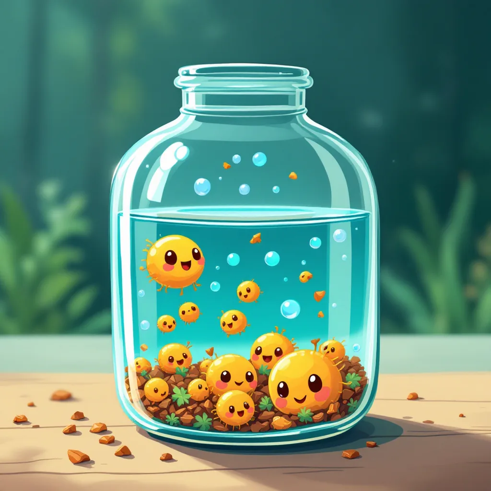
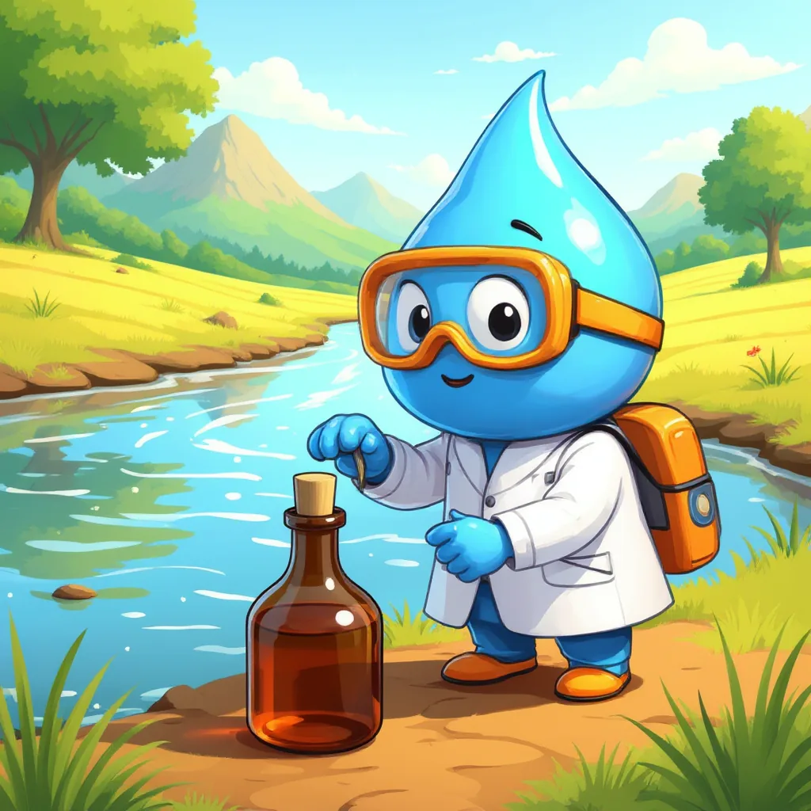
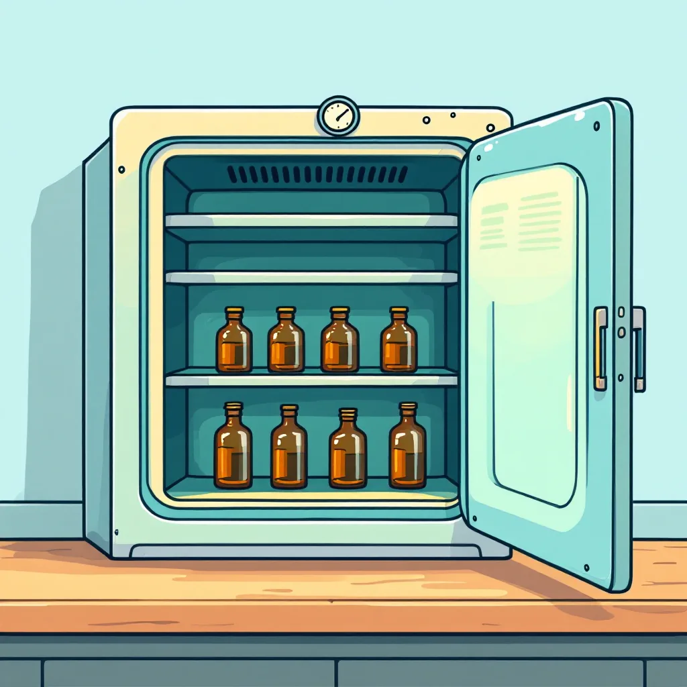
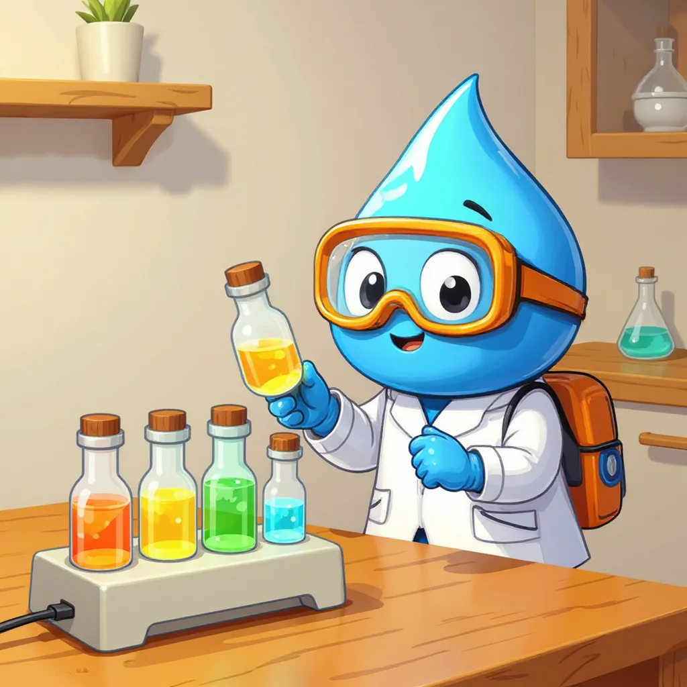
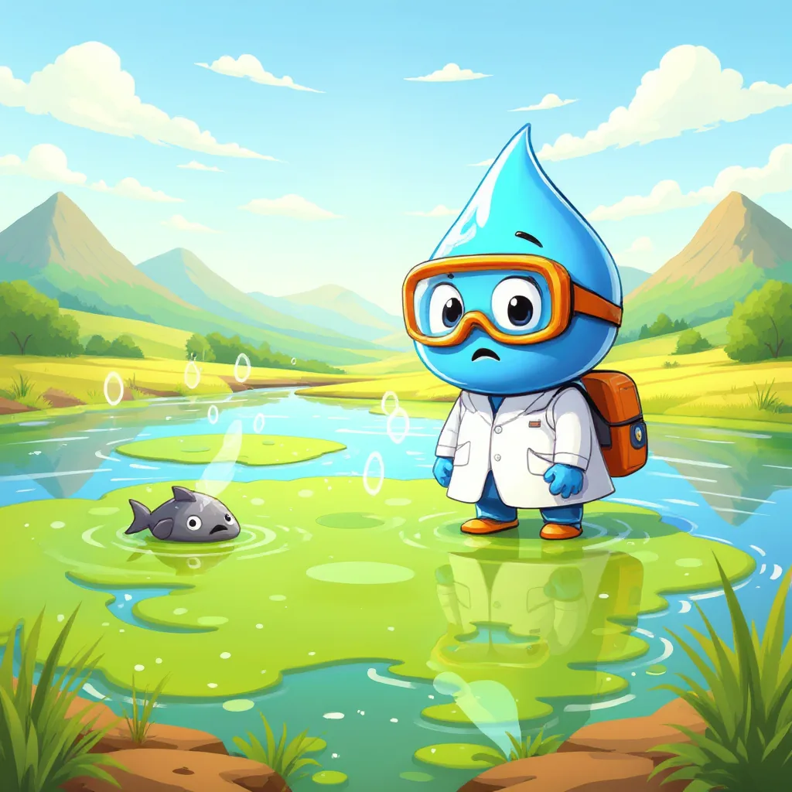
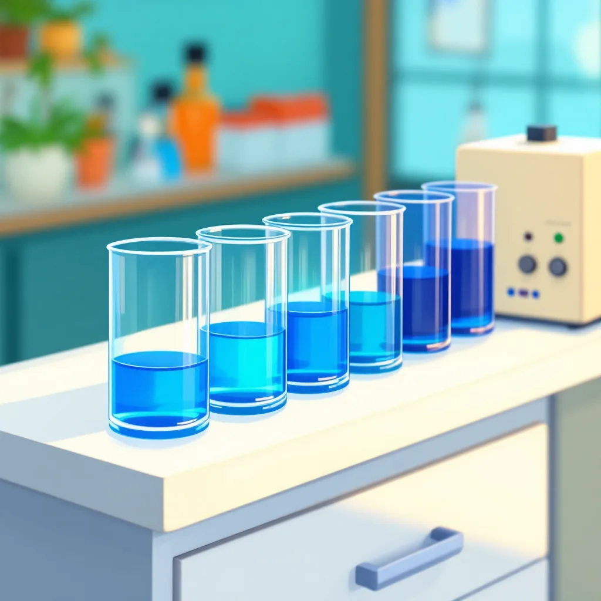
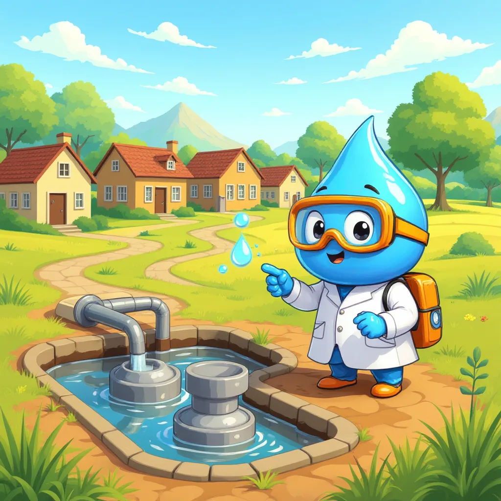

Otros parámetros y tipos de agua
DBO₅, DQO, nitrógeno, fósforo y la diferencia entre aguas naturales y residuales.
El hambre de oxígeno
Para empezar, en el agua viven bacterias diminutas que se alimentan de materia orgánica, es decir, de restos de hojas, comida o desechos. Al comer, esas bacterias respiran y gastan el oxígeno disuelto en el agua, el mismo que necesitan los peces. Por eso, un agua con mucha materia orgánica puede quedarse sin oxígeno. Así, para saber cuánta materia orgánica hay, el laboratorio mide cuánto oxígeno se gastaría al eliminarla.

DBO₅: el oxígeno que gastan las bacterias
En primer lugar, la DBO₅, o demanda bioquímica de oxígeno, indica cuánto oxígeno gastan las bacterias al comerse la materia orgánica de una muestra durante cinco días. Para medirla, se llena una botella sin dejar burbujas, se mide su oxígeno y se guarda cinco días a 20 °C y en la oscuridad. Luego, se mide otra vez el oxígeno: la diferencia es la DBO₅, en miligramos de oxígeno por litro.


De hecho, si hubiera luz, las algas de la muestra producirían oxígeno con la fotosíntesis y el resultado saldría engañoso. Por eso, la botella se guarda en la oscuridad.
En realidad, es un acuerdo entre laboratorios: en cinco días las bacterias ya comieron buena parte de la materia orgánica. Así, todos los resultados se comparan con la misma regla.
Laboratorio virtual y calculadora de DBO₅
Sigue los pasos con el botón azul.
DQO: la prueba química
Toca las tarjetas para comparar.

Por otra parte, la DQO, o demanda química de oxígeno, mide algo parecido pero sin esperar a las bacterias. En lugar de ellas, se usa una sustancia química muy fuerte, el dicromato, que en caliente destruye casi toda la materia orgánica en unas dos horas. Mientras trabaja, el líquido cambia de naranja a verde. Por eso, la DQO siempre es igual o mayor que la DBO₅: la química también destruye lo que las bacterias no pueden comer.
Por ejemplo, si la DBO₅ es más o menos la mitad de la DQO, o más, las bacterias pueden limpiar bien esa agua. En cambio, si es mucho menor, el agua lleva sustancias difíciles de degradar.
Laboratorio virtual y calculadoras de DQO
Los nutrientes
Nitrógeno total
Además, el nitrógeno total suma todas las formas del nitrógeno en el agua: el que forma parte de restos orgánicos, el amonio, los nitritos y los nitratos. Estas formas vienen de la orina, las heces, los abonos y los restos de alimentos. Sin embargo, en exceso alimentan una explosión de algas; además, demasiados nitratos en el agua de beber son peligrosos para los bebés. Por eso, las aguas residuales se tratan antes de volver al río.
Fósforo total
De igual forma, el fósforo total reúne todo el fósforo del agua, que llega sobre todo de detergentes, abonos y desechos humanos. Para medirlo, primero se calienta la muestra con un reactivo que convierte todo el fósforo en fosfato. Luego, se agrega otro reactivo que tiñe la muestra de azul: mientras más fósforo, más intenso es el azul. Así, igual que con el color del agua, un espectrofotómetro y una curva de calibración dan el resultado.


Aguas naturales y aguas residuales
Por un lado, las aguas naturales son las de ríos, lagos, quebradas y pozos antes de que las personas las usen. Su composición depende de la naturaleza: de las rocas que tocan, del suelo y de la lluvia. Por ejemplo, un río de montaña suele tener mucho oxígeno, poca materia orgánica y pocos nutrientes; por eso, su DBO₅ es muy baja.

Por otro lado, las aguas residuales son las que salen de casas, fábricas y granjas después de usarse, como el agua del inodoro, la ducha o el lavaplatos. En otras palabras, es agua que ya trabajó y viene cargada de restos de comida, jabón, microbios y nutrientes. Por eso, su DBO₅ puede ser casi cien veces mayor que la de un río limpio, y debe pasar por una planta de tratamiento antes de volver a la naturaleza.
Compara los dos tipos de agua
Cambia el tipo de agua y mira cómo crecen las barras.
Valores típicos aproximados. El agua residual corresponde a una concentración media según Metcalf y Eddy; cada barra se compara con el valor del agua residual.
¿Cuánta contaminación llega al río cada día?
Finalmente, para saber cuánto contamina una descarga no basta con la concentración: también importa el caudal. Por ejemplo, un vaso de agua muy sucia contamina menos que un río entero un poco sucio. Por eso, se calcula la carga contaminante, es decir, los kilogramos de una sustancia que llegan al río en un día. Así, en Colombia se cobra una tasa retributiva según la carga de DBO₅ y de sólidos que cada usuario vierte.
¿Natural o residual?
El agua de una quebrada en el páramo.
El agua que sale de la lavadora.
El agua de un pozo profundo en una finca.
El agua que sale de un matadero.
Un lago de montaña sin casas cerca.
El agua que baja por el desagüe de la cocina.
Más parámetros de la norma
Cada tarjeta abre una página con explicación, laboratorio virtual y calculadora.
Mini-reto
Una muestra tiene DBO₅ de 200 mg/L y DQO de 450 mg/L. ¿Qué tipo de agua es más probable?
¿Por qué la DQO es igual o mayor que la DBO₅?